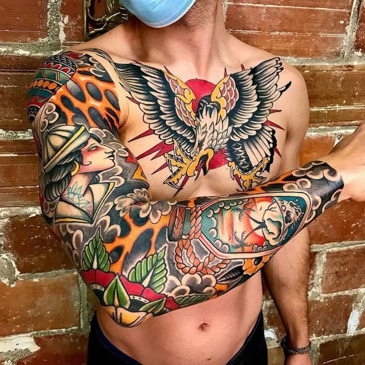
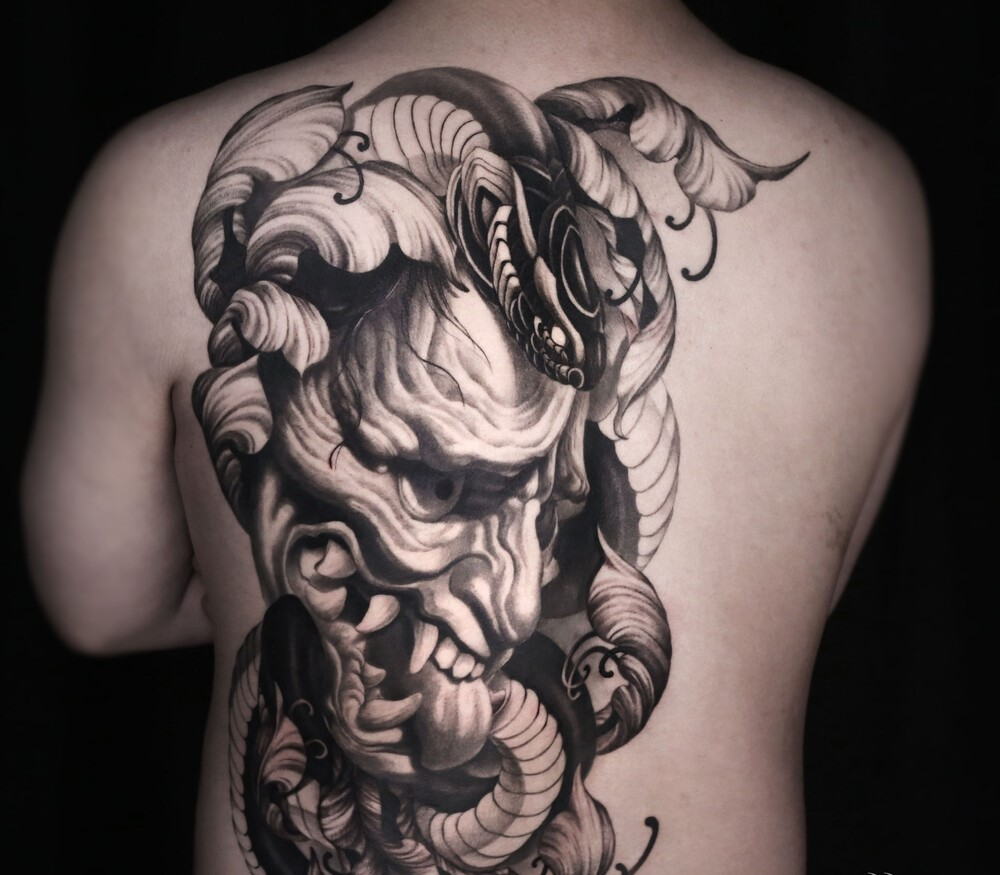
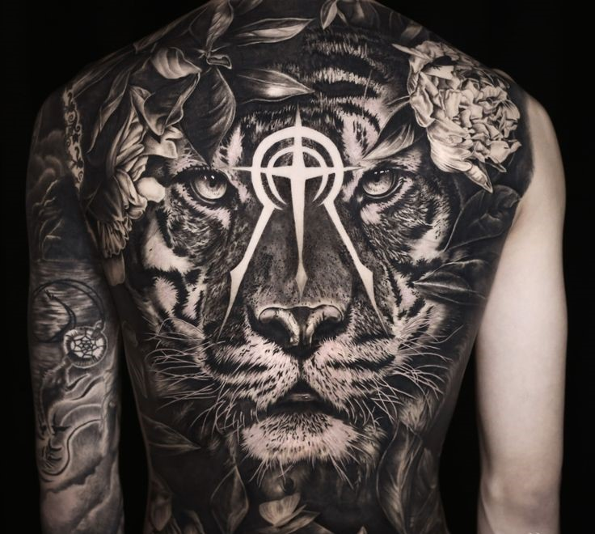
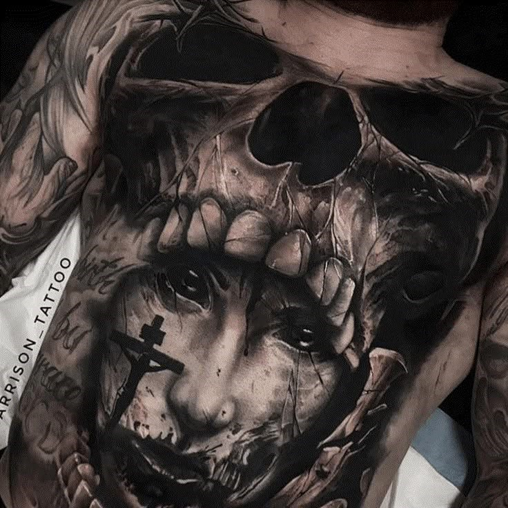
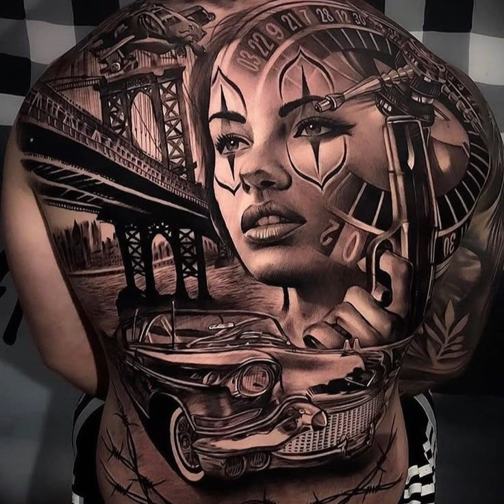
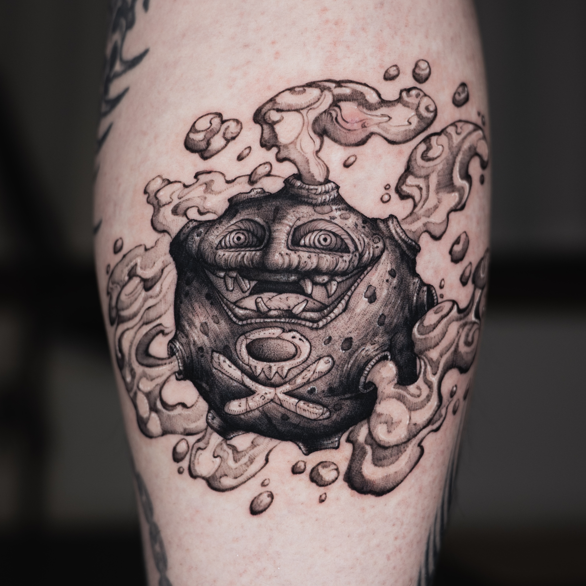
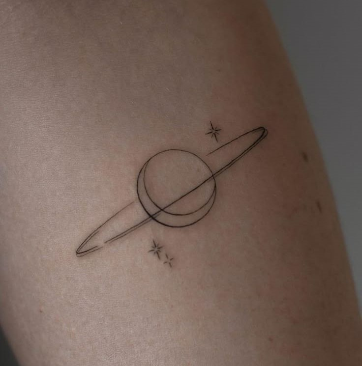
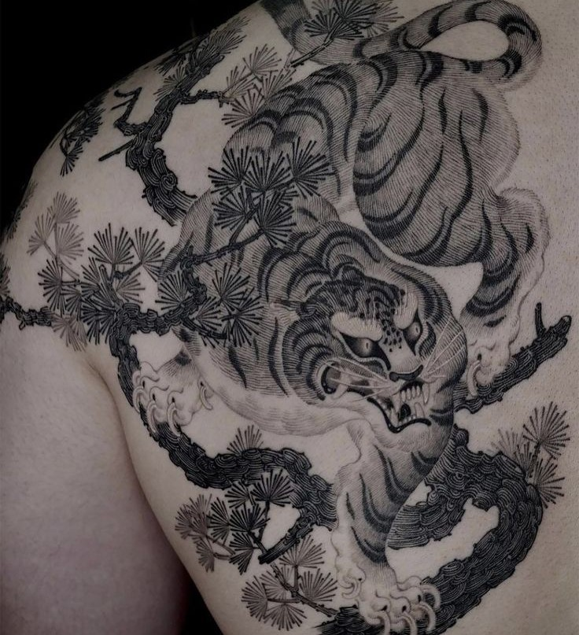

"타투"에는 여러 타투 아티스트들의 개성을 지닌.
흥미롭고 다양한 장르들이 많이 있습니다.
scroll down

미국 전통 타투 스타일 입니다.선원이나 군인이 즐겨 받았기에,
새, 범선, 독수리, 등의 상직적인 소재를 가지고 있습니다.

이레즈미라고 불리는 전통적인 일본식 스타일 입니다.
설화,민담,속세,전설 등의 상직적인 소재를 가지고 있습니다.

검정 잉크를 물에 희석한 비율로 농도를 조절하는 방식을 활용해
명암차이로 이미지를 표현하는 작업입니다.

제일 어둡고 진하게 어둠의 세계에 속해있는 소재로 작업하는
매니악한 타투 장르입니다.

치카노는 미국 거주 멕시코 이민자를 지칭하는 단어업니다.
이들의 예술적 영향력이 커지며 생겨난 장르 입니다.

매우 광범위한 용어지만 일러스트적인 요소가 섞인
강렬한 블랙이미지들을 보았을때 블랙워크 타투를 생각 할 수 있습니다.

이름에서 알 수 있듯 선으로 이루어진 타투를 칭합니다.
심플하고 간견한 도안과 꽃이나 식물을 소재로한 플로랄 타투가 대표적 입니다.

동양화적, 한국적 타투를 의미합니다.
붓과 먹을 사용해 터치한 듯한 질감과
동양의 상직적인 예술을 다루는 장르입니다.